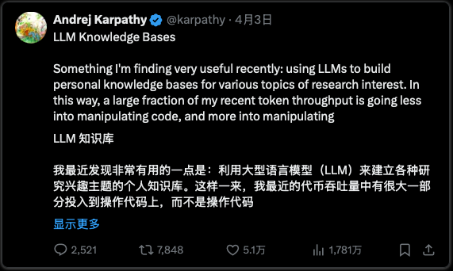
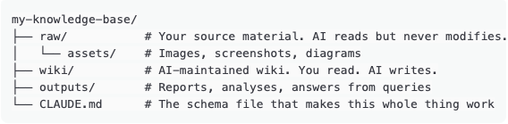

10万人收藏了卡帕西的这个帖子：

然后他发布了完整的 GitHub Gist。
两天
5000+星
1400+分叉
大多数人也会收藏他这个帖子
然后就没有然后了
不是因为难
因为没人给他们准确的提示
现在来解决这个问题
接下来会带你了解整个系统，给你每个步骤的完整提示词，告诉你哪里出了问题，这样你就不会浪费一个周末在大规模崩溃的项目上
"人类的工作是整理资料，指导分析，提出好问题，思考这一切的意义。LLM 的工作就是其他一切。" ——安德烈·卡帕西
概念（60秒版本）
你的知识散落在各处。
文章已保存在4个应用中。2023年的书签你永远不会再重温。会议笔记，存在一个你忘了存在的文件夹里。
现在，当你向人工智能提问关于你的东西时，它每次都是从零开始。
上传文档，提问，得到答案。
下次会话？
它忘了一切。
这就是 ChatGPT 文件上传、NotebookLM 和大多数 RAG 系统的工作原理。
零积累。
卡帕西的想法颠覆了这个观点。
AI不是每次都搜索你的原始文件，而是只读一次你的资料，然后编译出一个结构化的wiki。总结、交叉引用、观点间的联系、标记的矛盾。
这一切都由 AI 维护。
所有这些都存在于简单的 Markdown 文件中。
下次你提问时，AI 不会翻查原始文档。它会读取它已经建立的wiki。
联接已经存在了。
综合内容已经反映了你读过的所有内容。
你添加的每一个新资料都会让wiki更丰富。你问的每个问题都可以被归档回去。
知识会积累，而不是重置。
卡帕西的成果是：~100 篇文章，~40 万字，聚焦单一研究主题。
他一句话都没写。
AI 负责编写、链接、分类和维护所有内容。
没有数据库。没有嵌入。没有向量存储。
只有文件夹和文本文件。
你为什么应该关注？
目前有三个重要的用例：
如果你是创作者或营销人员，这就是内容研究引擎。将竞争对手分析、热门文章、观众洞察等数据导入raw/目录，wiki上能为你揭示手工找不到的模式和角度。
如果你是创始人或顾问，这就是你在客户工作、市场调研或竞争分析中的第二个大脑。你生成的每一份报告都会反馈到系统。到了第 3 个月，你的 AI 比大多数新员工更了解你的领域。
如果你是学生或研究人员，这正是卡帕西建造它的真正目的。深入研究数十篇论文，AI 追踪思想之间的联系、作者分歧之处以及存在的空白。
*这也可用于许多企业研发工作流程。
在我们建造之前：你需要什么
→ 任何能读取本地文件的 AI 编码工具（Claude Code、Cursor、Codex 或类似工具）
→ 一个文本编辑器（推荐用 Obsidian，但 VS Code、记事本，什么都行）
→ 10+篇与你感兴趣主题相关的原始文档
→30分钟初始设置，之后每个源10分钟
就是这样。
没有特殊软件。没有账号需要创建。不需要安装插件。
---
本文剩下的部分是构建过程。
7 步。
每一步都有你要粘贴入 AI 的精确提示。按顺序跟着操作。
---
步骤1：创建文件夹结构（2分钟）
你可以在你的电脑上任何地方创建这个结构：

三个文件夹，一个文件。
如果你在这一步停留超过2分钟，那说明你想太多了。
步骤 2：写出你的 schema 文件（这是大家都跳过的步骤。不要学他们。）
模式（schema）是通用聊天机器人和训练有素的wiki维护者的区别。
它告诉你的 AI 知识库的内容、如何组织，以及添加来源、提问或维护时该怎么做。
其他指南都会给你一个10行的模板。以下是基于卡帕西的gist、为实际用途设计的完整生产架构：
# Knowledge Base Schema
## Identity
This is a personal knowledge base about [YOUR TOPIC].
Maintained by an LLM agent. The human curates sources and asks questions. The LLM does everything else.
## Architecture
- raw/ contains immutable source documents. NEVER modify files in raw/.
- wiki/ contains the compiled wiki. The LLM owns this directory entirely.
- outputs/ contains generated reports, analyses, and query answers.
## Wiki Conventions
- Every topic gets its own .md file in wiki/
- Every wiki file starts with YAML frontmatter:
---
title: [Topic Name]
created: [Date]
last_updated: [Date]
source_count: [Number of raw sources that informed this page]
status: [draft | reviewed | needs_update]
---
- After frontmatter, a one-paragraph summary
- Use [[topic-name]] for internal links between wiki pages
- Every factual claim cites its source: [Source: filename.md]
- When new info contradicts existing content, flag explicitly:
> CONTRADICTION: [old claim] vs [new claim] from [source]
## Index and Log
- wiki/index.md lists every page with a one-line description, by category
- wiki/log.md is append-only chronological record
- Log entry format: ## [YYYY-MM-DD] action | Description
(Actions: ingest, query, lint, update)
## Ingest Workflow
When processing a new source:
1. Read the full source document
2. Discuss key takeaways with user
3. Create or update a summary page in wiki/
4. Update wiki/index.md
5. Update ALL relevant entity and concept pages across the wiki
6. Add backlinks from existing pages to new content
7. Flag any contradictions with existing wiki content
8. Append entry to wiki/log.md
9. A single source should touch 10-15 wiki pages
## Query Workflow
When answering a question:
1. Read wiki/index.md first to find relevant pages
2. Read all relevant wiki pages
3. Synthesize answer with [Source: page-name] citations
4. If answer reveals new insights, offer to file it back into wiki/
5. Save valuable answers to outputs/
## Lint Workflow (Monthly)
Check for:
- Contradictions between pages
- Stale claims superseded by newer sources
- Orphan pages with no inbound links
- Concepts mentioned but never explained
- Missing cross-references
- Claims without source attribution
Output: wiki/lint-report-[date].md with severity levels
## Focus Areas
[List 3-5 topics this knowledge base covers]
复制以上。自定义重点区域。命名为CLAUDE.md文件放在你的项目根节点里。
步骤3：填满你的原始文件夹（10分钟倾倒，零整理）
打开 RAW/把所有东西倒进去：
→ 将文章复制粘贴到.md 或.txt 文件中
→ 从你现在用的应用导出笔记
→ 将截图和图表保存到 RAW/素材/
→ 粘贴研究论文、PDF、竞争对手分析
→ 把你囤积了几个月的书签扔掉
别整理。不要更改任何名字。别清理。
那是 AI 的工作。
Karpathy 的专业提示：Obsidian Web Clipper 浏览器扩展只需一键即可将任何网页文章转换为 Markdown。
设置一个热键（设置→快捷键→"下载附件"），把所有图片拉到本地，方便 AI 引用。
如果你不使用 Obsidian，直接从浏览器复制粘贴也可以。
目标是产量。不是完美。
步骤4：进行你的首次摄入
打开你的 AI 代理。指向你的项目文件夹。粘贴以下内容：
摄入提示：
"Read the schema in CLAUDE.md. Then process [FILENAME] from raw/. Read it fully, discuss key takeaways with me, then: create a summary page in wiki/, update wiki/index.md, update all relevant concept and entity pages, add backlinks, flag any contradictions, and append to wiki/log.md."
一次只处理一个信息源。
卡帕西也是这么做的。
阅读摘要。查看更新。引导 AI 重点关注哪些内容。
这比一次性批量处理所有内容的效果要好得多。
在添加了5到10个来源后，你的wiki/文件夹会有一个索引、一个日志，以及15到30个相互关联的页面。
那一刻，一切都豁然开朗了。
步骤5：开始查询你的知识库
一旦你拥有10+个wiki页面，系统就真正有用了。粘贴以下内容：
查询提示：
"Read wiki/index.md. Based on what's in the knowledge base, answer: [YOUR QUESTION]. Cite which wiki pages informed your answer. If this reveals new connections worth preserving, create a new page in wiki/ and update the index."
最有价值的问题：
→ "这个知识库中最大的三个不足之处是什么？"
→ "哪些信息来源彼此不一致？不一致的地方是什么？"
→ "根据这里的内容，我接下来应该研究什么？"
→ "仅使用wiki内容撰写一份500字的[主题]简报"
→ "[概念 A]和[概念 B]之间存在哪些联系？"
关键循环：好的答案应该被归档回wiki。
一个比较，一个分析，一个你发现的联系。
这些信息会像摄入的资源一样积累在知识库中。
每一个问题都会让下一个答案变得更好。
第六步：每月进行健康检查
没人会做这一步。但这却是防止整个系统慢慢腐烂的重要步骤。粘贴以下内容：
LINT提示：
"Run a full health check on wiki/ per the lint workflow in CLAUDE.md. Output to wiki/lint-report-[date].md with severity levels ( errors, warnings, info). Suggest 3 articles to fill the biggest knowledge gaps."
这很重要的原因：当 AI 写了些稍有错误的内容，你保存回去时，下一个答案就是建立在错误的基础上。
两个月后，你有五页内容加深了同样的错误。健康检查能在雪球效应发生前及时发现。
每月一次检查，花你十分钟时间。
如果你想让系统保持可信，那就别在这一步偷懒。
第七步：让它积累
这正是系统发挥作用的地方。
连续使用4-6周后，你不仅仅是在找笔记。
你查询的是一个结构化的知识系统，它比你更能理解你来源之间的联系。
加速复利增长的三种方法：
文件探索输出：当 AI 生成你认为有价值的比较或分析时，保存到 wiki/或 outputs/中。
Karpathy 说，他自己的探索和查询"总会累积"在知识库中。
添加视觉输出：让 AI 以Markdown 表格、图表或幻灯片的形式呈现答案。
这些内容会变成可重复使用的资源，而不是一次性聊天消息。
对所有内容进行版本控制：你的wiki只是 markdown 文件。
初始化一个 git 仓库，你会获得完整的历史、分支功能，并且可以撤销 AI 搞砸的任何东西。
---
好了，这就是构建过程。
---
现在，来说说没人会告诉你的部分。
这个系统会在哪里崩溃（诚实版）
这还只是一个初步的模式，不是成品。卡帕西本人称其为"一堆粗糙的脚本"，并表示还有发展成真正产品的空间。
将你的知识托付给它之前，你需要了解以下几点：
上下文窗口天花板
Karpathy 的wiki大约有~100 篇文章和~40 万字。
但即使是 128K 标记的上下文窗口也只能容纳~96K 字。
AI会选择性地浏览索引，这意味着它可能会遗漏一些内容。
研究表明，大型语言模型存在"中间迷失"现象，即长输入中心的信息被边缘化。
你的查询结果会有盲点。
请接受这一点。
错误叠加
AI 写了一个带有微小错误的wiki页面。
你查询它。
错误进入你的答案。
你把答案归档。
现在两个页面都强化了那个同样的错误。
每月linting会有帮助，但linting的 AI 和犯错的 AI 有同样的盲点。
这是最大的风险。
一位评论 Karpathy 要点的评论者说得很对："当输出被归档时，错误也会累积。"
幻觉不会消失
wiki的方法减少了幻觉，因为 AI 会根据你的资料给出答案。
但这并不能消除它。
AI仍然可以合成原作中不存在的联系。
而且因为wiki看起来权威（干净的标记、交叉引用、引用），你更可能相信错误信息。
保持警惕。
成本不是零
每一次导入、每一次查询、每一次 lint 检查都消耗token。
一个涉及 10-15 页的数据源，在前沿模型中，API 调用费用可达 2-4 美元。
50个数据源，仅数据摄取一项就要 100-250 美元。（用国产大模型会便宜得多）
虽然比雇佣研究助理便宜，但并非免费。
它无法扩展到企业级
Karpathy 表示，索引文件方法在文章数量约为 100 篇时无需 RAG 即可正常工作。
但当文章数量超过10,000时，这种方法就失效了。
索引规模变得过大，导致数千页内容的一致性无法保证。
这时就需要使用该系统原本旨在避免的其他基础设施。
务必了解其上限。
单一模型的盲点
你的整个wiki都是某个模型对你来源的解读。
而那个模型本身就存在偏见和倾向。
对于高风险决策，一位评论者建议使用4个以上的模型独立运行查询，然后比较它们的一致性。
这种方法更稳健，单成本也高出4倍。
该怎么办 ？
→ 错误叠加：每月lint检查。手动交叉核对关键信息。在高风险决策上，千万不要盲目相信wiki。
→ 上下文限制：让每个wiki专注于一个领域。多个领域？你需要多个知识库。
→ 成本：使用前沿模型进行数据摄取和复杂查询。便宜的模型用于简单更新。
→ 幻觉：上述模式要求每个声明都必须注明引用来源。如果页面声明没有[来源：文件名]，linting工具会将其标记出来。
→ 规模：要明白这只是个人工具，而非企业基础设施。如果它已不再能满足你的需求，那是个好消息。
为什么它依然重要
尽管有以上种种，这依然是目前最实用的个人知识体系。
原因很简单：维护成本增长速度超过了其价值增长速度，因此人们放弃了wiki。
你开始整理，感觉很棒，持续两周，然后维护工作就扼杀了你的动力，你再也不会碰它了。
LLMs（大语言模型） 不会感到无聊。
它们不会忘记更新交叉引用。他们可以一次性处理 15 个文件而毫无怨言。
莱克斯·弗里德曼确认他也使用类似的配置。
他生成交互式 HTML 可视化图标，并创建"迷你知识库"，并以语音模式加载，以便在 7-10 英里的跑步过程中使用。
来自DAIR.AI的埃尔维斯·萨拉维亚，一直在构建了用于人工智能研究整理的LLM知识库。
在 Karpathy 的gist发布后 48 小时内， GitHub上就出现了多个开源实现。
这已经不是实验了。
对于任何从事严肃研究的人来说，这正逐渐成为一种标准做法。
去建造它
收藏卡帕西的文章要点和真正从中受益之间的差别，只是一个下午的时间。
选择主题。创建文件夹。复制架构。
把你已经拥有的材料放进去。进行你的第一次数据导入。
然后明天换个数据源再做一遍。
下周还有五期。
wiki每次更新都会变得更智能。这才是关键所在。
三个文件夹。一个架构。
一款能帮你完成你永远不会亲自做的繁重工作的 AI。
别再收集保存书签了。
开始积累知识。